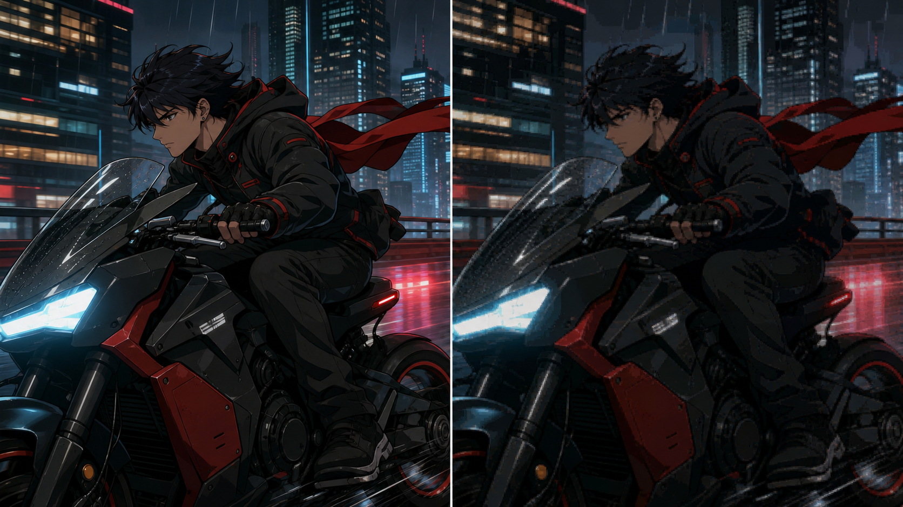

Media operations / vision systems / verification
Intelligence workflows.
Interactive media operations, computer-vision, and verification projects. Built with Codex, Gemini, Claude Code, and human review where those tools improved the workflow.
Interface ONLINE
Dataset SANITIZED
Review HUMAN-IN-LOOP
TIMELINE_ANALYZER.LOG Run scan Fictional demonstration values
Ready to scan one sanitized episode
00:00:00 00:12:00 00:24:00
Intro
Opening
Episodic
Ending
Opening range 00:01:38:12
Ending range 00:22:04:08
[PASS] continuity window stabilized
Status Experimental prototype
Role Workflow designer, dataset preparation, and pipeline testing
Core Technologies Python, PyTorch, Computer Vision, Temporal Anchoring
Scale Season-level episodic timeline analysis
Manual Video Scrubbing → Automated Timeline Flag Generation
Open interactive case study SYS-03 →
MOTION_DELTA.QUEUE Sample frames Fictional demonstration values
Ready to sample instructional footage
F-0119 DROP
F-0184 KEEP
F-0261 REVIEW
F-0342 KEEP
[INDEX] 1,248 sampled frames
Status Computer-vision experiment
Role Experiment design, frame evaluation, and workflow analysis
Core Technologies Python, OpenCV, Dynamic Delta Extraction
Scale Frame-level analysis across instructional video sources
Raw Video Ingestion → Motion Vectors Analysis → Dynamic Delta Filter Pass
Open case study SYS-04 →
QUALITY_MATRIX.OUT Run check Fictional demonstration values
Reference and transcode ready

VMAF 96.4 PASS
PSNR 42.1 PASS
SSIM 0.985 PASS
SYNC +0.00 PASS
[REF] mezzanine_source_01.mov
Status Working comparison prototype
Role Workflow design, media analysis, and report validation
Core Technologies FFmpeg, VMAF Model Framework, Automated Bash Scripting
Scale Version-level objective quality and sync verification
Subjective Visual Watch Quality Checks → Objective VMAF Quality Verification
Open interactive case study SYS-05 →
No active systems match the current category and search token.
Complete portfolio
All projects
Six case studies, three full-screen HTML demos, two interactive analysis examples, and supplied or publish-safe visual evidence.
Operations Interactive HTML
Media Inventory Console
Season inventory search, hydration, export, queues, and confirmed asset actions. Includes the earlier file-linking search module.
Airtable Requirement Unchecked
Browser Hydrate DONE
Tracker Guard Updated
Automation Interactive HTML
Asset Status Reconciliation
Checks completed ingest state against Airtable requirements and updates only exact, verified matches.
Video QA Interactive review
VMAF Quality Check
Objective source-versus-transcode comparison with review ranges, sync checks, and report output.
AI media analysis Interactive review
Anime OP/ED Timecodes
Candidate opening and ending boundaries across episodes, with explicit human approval before final timestamps.
Publishing Live public system
K-Taekwondo Calendar
Multi-studio schedule publishing from Airtable through a controlled public calendar workflow.
Computer vision Real annotated frames
Instructional Keyframes
Motion-aware frame selection for instructional content, with human annotation retained as the final authority.